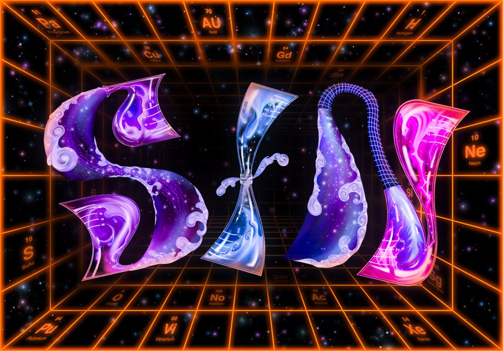

Cosplay
the Font
ABSTRACT
This project explores illustrative typography by transforming the letters of my name into a visual illustration inspired by a randomly invented occupation. Drawing from the imagined tools, environment, and movements of this fictional profession, each letter is illustrated to subtly embody its characteristics while maintaining readability. The forms blur the line between object and letter, creating layered visuals that reveal hidden details upon closer observation. By combining narrative, imagination, and visual illusion, the project reinterprets my name as both identity and storytelling device.

Peppermint Candy Fashion Designer

Universe Chemist